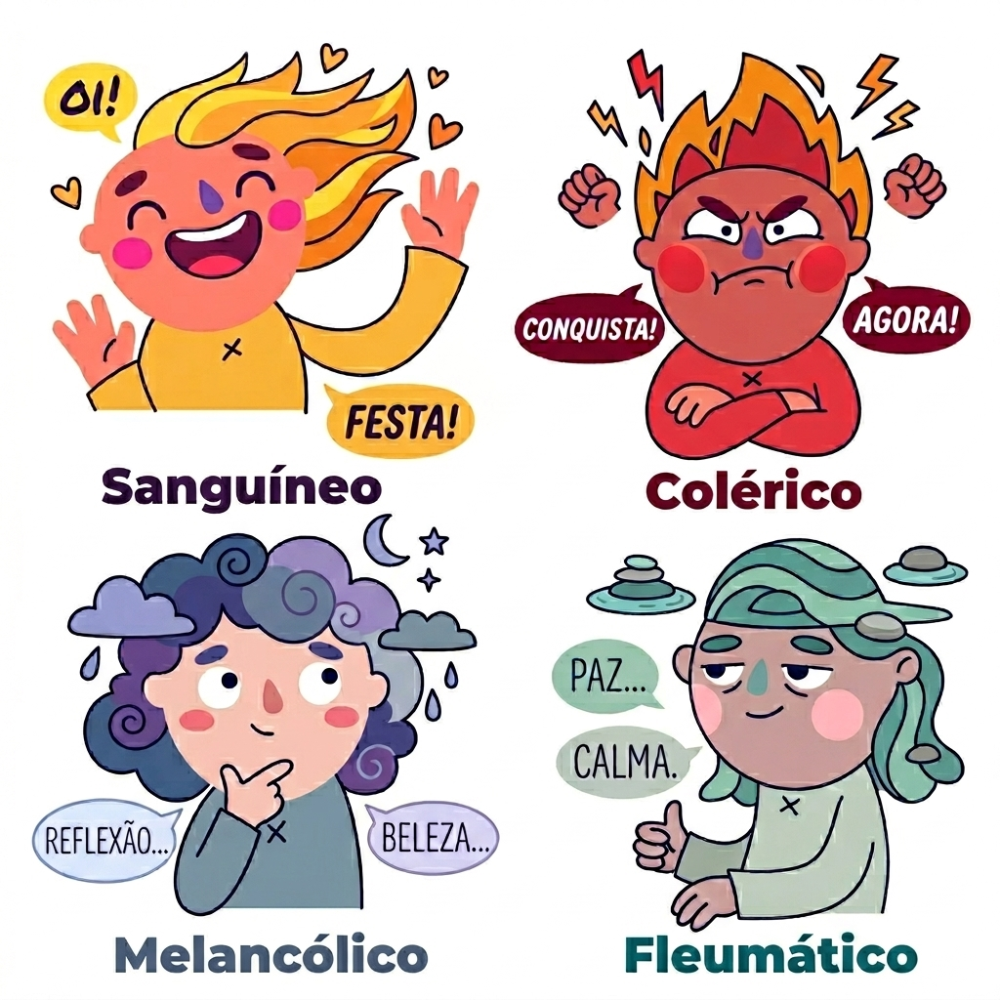

QUAL É O SEU
TEMPERAMENTO?
Descubra qual dos 4 temperamentos clássicos melhor descreve você.
20 perguntas · cerca de 5 minutos
🔥 Colérico
☀️ Sanguíneo
🌊 Fleumático
🌙 Melancólico
Referências bibliográficas
Padre Paulo Ricardo · Os Quatro Temperamentos
Murilo Frizanco · Os 4 Temperamentos
Mestre Gabriel Amorim · Decifrando os Temperamentos Humanos
Desenvolvido por Rodrigo Paulo